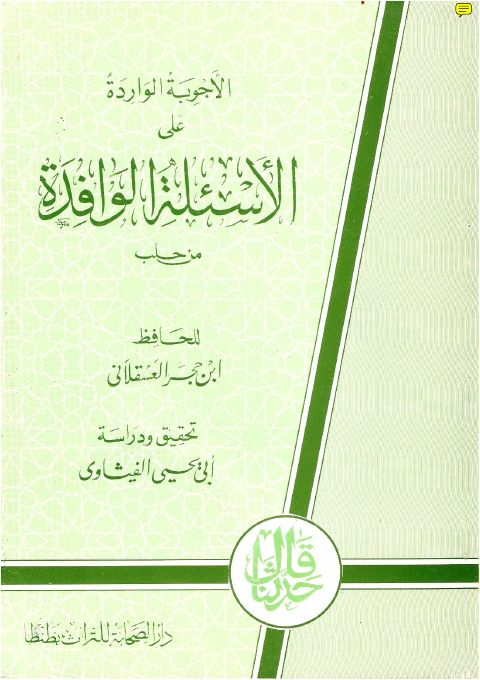

Downloads need an internet connection.
الأجوبة الواردة على الأسئلة الوافدة من حلب
Authors: أحمد بن علي بن حجر العسقلاني
Editors: أبو يحيى الفيشاوي
Publishers: دار الصحابة للتراث
**▫️ العنوان: الأجوبة الواردة على الأسئلة الوافدة من حلب** ▪️ المؤلف: #ابن_حجر_العسقلاني ▫️ المحقق: #أبو_يحيى_الفيشاوي ▪️ الناشر: #دار_الصحابة ▫️ تاريخ النشر: 1412هــ ▪️ بلد النشر: طنطا، #مصر ▫️ الطبعة: 1 ▪️ عدد الأجزاء: 1 ▫️ الصفحات: 68 ▪️ نوع الوعاء: #كتاب ▫️ التصنيف الرئيسي: #الفقه_وأصوله ▪️ التصنيف الفرعي: #الفتوى ۪